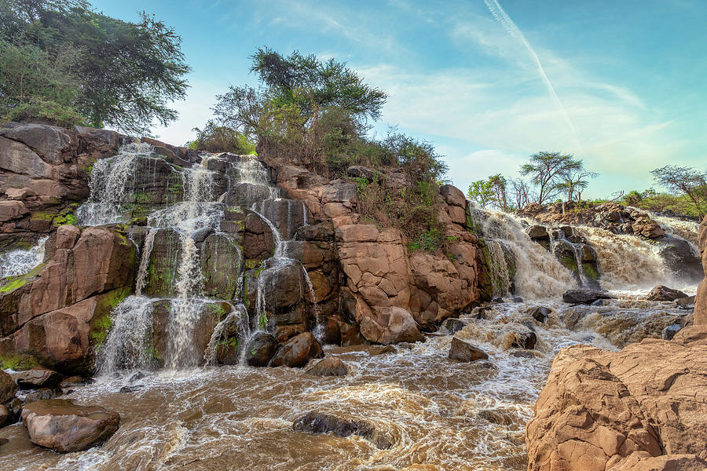
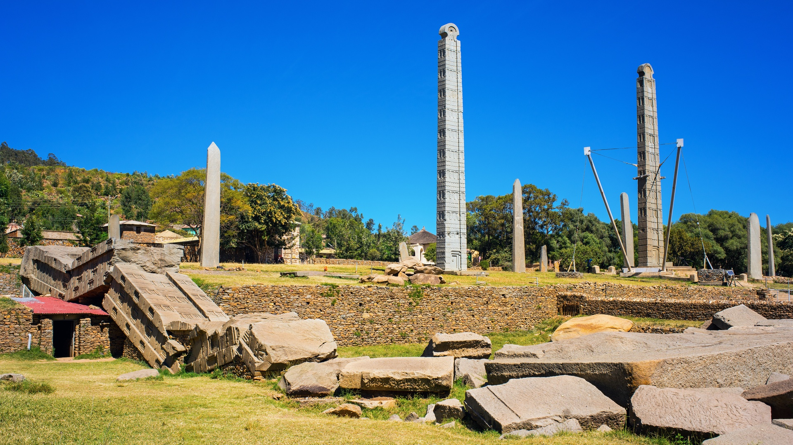
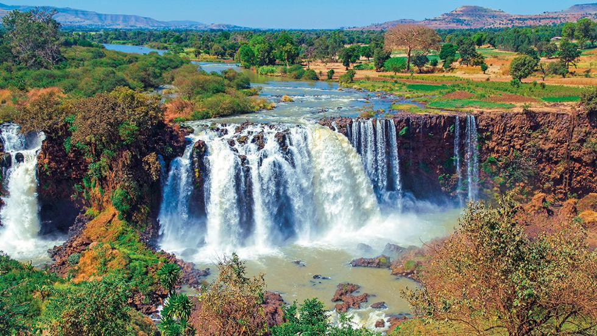
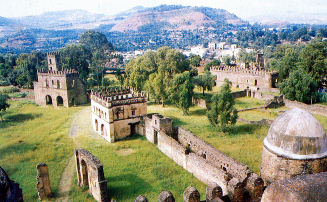
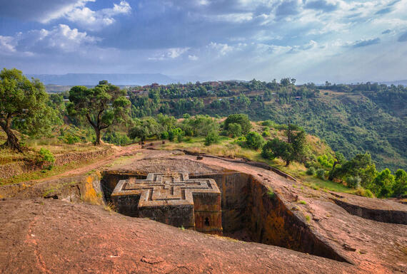
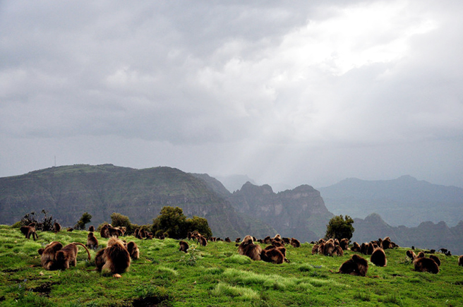

Ethio Tour and Travel
Trending Destinations
#1 ADDIS ABABA
Ethiopia's capital is located more or less in the dead centre of the country and is the world's third-highest capital at 2,400 m. Its name means 'New-Flower' and it is a relatively modern city, founded in 1887 by Emperor Menelik II. In just over a century it has grown from nothing into a modern metropolis of several million people. Its altitude lends it a comfortable climate and throughout the year the weather is temperate with just the occasional downpour. |
#2 Awash National Park This scenic national park is situated in the dry acacia savanna of the Rift Valley some 200km from Addis Ababa. A magnificent 150m-deep gorge, carved by the Awash River, forms the southern boundary of the park, including a substantial waterfall. To the north, you'll see the ragged edges of Mount Fantelle, a dormant volcano whose crater towers above the surrounding bush. Other highlights include the Filwoha Hot Springs, which feed a series of beautiful translucent blue pools and Lake Beseka. Although 80 mammal species have been recorded in Awash, the game viewing is less of an attraction than the scenery and birdlife. Awash National Park is regarded as one Ethiopia's top birding destinations, with over 450 species. Including the endemic yellow-throated serin and the Ethiopian cliff swallow. |
#3 Axum This fascinating town was the centre of the Axumite Empire, one of the most important and technologically advanced civilisations of its time and a major force in world trade between the 1st and 7th centuries AD. A further twist in the town's long history is speculation that it could have held the court of the Queen of Sheba and also that it is the final resting place of the Ark of the Covenant. Whatever the truth of these matters it is undoubtedly the holiest city of the Ethiopian Orthodox church and there is a startling wealth of antiquities both to be seen and as yet still undiscovered. |
#4 Bahir Dar Bahir Dar, with its wide avenues of palms and scenic lakeside location, is one of Ethiopia's most attractive towns. Located on the southern shore of Lake Tana, it is an ideal base from which to explore the lake and surrounding area, which includes the blue nile falls. Once no more than a sleepy fishing village it has grown in size during recent times and palm-lined avenues and lakeside vistas make it an attractive place to stay. There are good amenities for travellers and the town itself has become an important industrial centre partly as a result of the hydro-electric dam built at nearby Tis Abay. |

Honorable Mentions
Gondor

Lalibela

Simien mountains

SEng 2012|Group 9 Copyright © AASTU All Rights Reserved
- travelinfo@gmail.com
- +251 11 861 21 21
-
Africa Avenue Behind DH Geda Building, Addis Ababa, Ethiopia